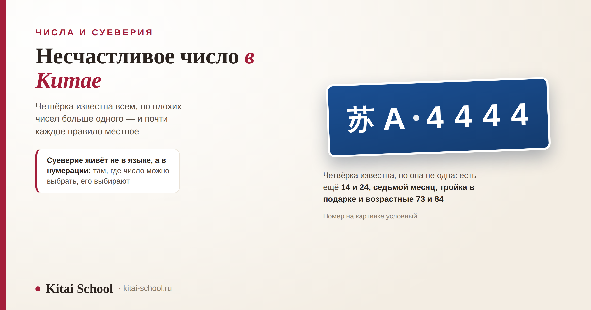
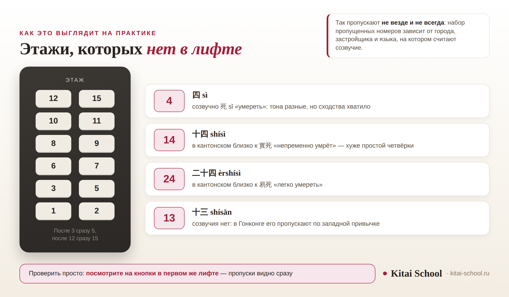

Числа и суеверия
Несчастливое число в Китае: четвёрка, её двузначные усиления и те числа, о которых говорят реже


На вопрос, какое несчастливое число в Китае, обычно отвечают одним словом: четыре. Ответ верный, но неполный — плохих чисел там несколько, и устроены они по-разному. Одни получили репутацию из-за созвучия, другие из-за месяца, в который попадают, третьи вообще не числа, а слова. Разберём их по порядку и честно скажем, где обычай действительно работает, а где это местное правило, о котором в соседней провинции не слышали.
Главное — четвёрка: 四 (sì) звучит близко к 死 (sǐ). 14 и 24 считаются хуже простой четвёрки: в кантонском они складываются в целые фразы. Семёрка ни при чём — дурная слава у седьмого лунного месяца. Тройку избегают в подарках, но далеко не везде. 73 и 84 — возрасты из пословицы. 250 — не несчастливое число, а обидное слово.
Короткий ответ: какая цифра в Китае считается несчастливой
Четвёрка. Причина одна и хорошо известна: 四 (sì) «четыре» звучит близко к 死 (sǐ) «умереть». Этого хватило, чтобы число вытеснили из нумерации — из этажей, номеров и количеств.
Сразу важная оговорка, которую в пересказах обычно теряют. Это созвучие, а не одно и то же слово: у 四 четвёртый тон, у 死 третий, и для носителя они различаются примерно как для нас «зÁмок» и «замÓк». Как устроен сам знак, откуда взялась его форма и в каких словах 四 ведёт себя совершенно спокойно, разобрано отдельно: иероглиф «четыре» (四).
Понятнее всего это через привычное сравнение: роль четвёрки в Китае примерно та же, что у числа тринадцать в Европе. Условность, которую соблюдают, даже не веря в неё.
А дальше начинается то, о чём в коротких ответах не говорят: четвёрка не одна.
Почему число вообще становится плохим
В китайском сравнительно немного разных слогов и очень много слов, поэтому созвучия встречаются на каждом шагу. Это рабочий механизм языка: на нём держатся и поздравления, и шутки, и интернет-сокращения — отсюда же, например, цифровой сленг вроде 666: китайский интернет-сленг.
Число для такого переноса подходит идеально: оно короткое, звучит часто и легко притягивает похожее слово. Работает это в обе стороны — у восьмёрки, шестёрки и девятки репутация, наоборот, хорошая, и разобрана она в материале про цифры: цифры от 0 до 10 на китайском.
Но дурная слава складывается не всегда одинаково. Способов пять, и различать их стоит, потому что ведут они себя по-разному.
| Способ | Пример | Что происходит |
|---|---|---|
| Простое созвучие | 四 sì и 死 sǐ | число звучит похоже на неприятное слово — самый частый случай |
| Усиленное созвучие | 十四 и 二十四 в кантонском | двузначное число складывается в целую фразу, и она хуже одной четвёрки |
| Не число, а время | седьмой лунный месяц | сама семёрка ни при чём: дурная слава у месяца и связанных с ним обрядов |
| Не созвучие, а значение | 二百五 | число давно стало словом, и слово это обидное |
| Привычка со стороны | тринадцать в Гонконге | число пришло с западной нумерацией вместе с суеверием |
Из таблицы видно главное: единой китайской системы плохих чисел нет. Есть несколько разных историй, которые в пересказах сливают в одну, и из-за этого появляются утверждения вроде «китайцы не любят нечётные числа» — проверить такое невозможно.
Четырнадцать и двадцать четыре: хуже, чем просто четвёрка
Двузначное число читается целиком, и созвучие у него своё. Поэтому в домах нередко пропускают не только четвёртый этаж, но и четырнадцатый.

Самая внятная звуковая картина получается в кантонском: 十四 звучит близко к 實死 «непременно умрёт», а 二十四 — к 易死 «легко умереть». В путунхуа таких готовых фраз не выходит, но четвёрка на конце всё равно делает число нежелательным.
Отсюда понятно и почему в Гонконге нумерация «дырявая» дважды: к местным пропускам добавляется тринадцатый этаж, пришедший с западной нумерацией в колониальный период. Вывод для приезжего: номер этажа не равен количеству этажей под вами.
Семёрка: число не виновато, виноват месяц
Семёрку в списках несчастливых чисел упоминают часто, и это неточность. Само число дурной славы не имеет: оно спокойно живёт в счёте и в названии праздника 七夕. Но с ним связаны две вещи, из-за которых семёрка в такие списки попадает.
| Что | О чём речь | Что с этим связано |
|---|---|---|
| 七 qī | само число | дурной славы не имеет: оно есть и в счёте, и в названиях праздников |
| 七月 | седьмой лунный месяц | месяц духов: на него не назначают свадьбы, переезды и крупные покупки |
| 头七 | седьмой день | первый поминальный день после смерти |
| 七七 | сорок девятый день | последний из семи поминальных дней |
Седьмой лунный месяц называют месяцем духов: на него стараются не назначать свадьбы, переезды и крупные покупки. Это ощутимо, потому что речь о целом месяце, а не об одном числе.
Вторая история — поминальный счёт: обряды справляют каждые семь дней, до 七七, то есть до сорок девятого. Обычай сложился под влиянием буддизма и даосизма; народные объяснения — про семь застав или про семь душ, уходящих по одной, — именно народные.
Тройка: обычай, который работает не везде
Тройку избегают в подарках и на свадьбах: 三 (sān) слышат как 散 (sàn) «расходиться». И сразу честная оговорка: обычай этот местный. Где-то его соблюдают строго, где-то о нём не слышали, а встречается и обратное прочтение — через созвучие с 生 «рождаться», при котором тройка оказывается хорошей.
Ученица собиралась на свадьбу китайских друзей и спросила, сколько положить в красный конверт. Сумму она уже выбрала — с тройкой.
Я не стала говорить «так нельзя». Вместо этого предложила спросить у общих знакомых, и ответы пришли разные. В семье невесты тройки в подарках избегают: слышат в них 散. Подруга из другой провинции о таком обычае не слышала вообще и удивилась вопросу.
Сумму в итоге поменяли — не потому, что примета верна, а потому, что про семью невесты теперь было известно точно.
С тех пор я советую именно это. Правило про числа редко бывает общекитайским, и один вопрос заранее надёжнее любого списка примет из интернета.
Из этого следует правило, которое работает лучше любых списков: про числа спрашивают, а не угадывают. Вопрос «а у вас с этим как?» не бестактен — наоборот, он показывает, что вам не всё равно.
Семьдесят три и восемьдесят четыре: возрасты из пословицы
Есть ещё два числа, которые в списках примет почти не встречаются, но в разговорах о возрасте всплывают постоянно. Это 73 и 84.
Пословица звучит так: 七十三、八十四，阎王不叫自己去 — в семьдесят три и восемьдесят четыре владыка загробного мира не зовёт, человек уходит сам. Объяснение простое: 73 года прожил Конфуций, 84 — Мэн-цзы. Раз уж эти годы оказались последними для мудрецов, обычному человеку их тем более стоит опасаться.
Насколько это достоверно. Возраст Конфуция подтверждается записью в «Цзо чжуань»: там прямо сказано, что в год его смерти ему было семьдесят три. С Мэн-цзы сложнее — число 84 держится на предании, строгого подтверждения у него нет. Считают при этом по 虚岁, то есть по счёту, в котором человеку при рождении уже год, и это добавляет расхождений.
Относятся к пословице по-разному: кто-то вспоминает её с улыбкой, кто-то в эти годы действительно нервничает. Для иностранца важно одно: не поднимать эту тему в разговоре с пожилым человеком — даже в виде вопроса о том, правда ли так говорят. Разговор о возрасте и так требует осторожности, а здесь он упирается прямо в смерть.
Двести пятьдесят: не несчастливое, а обидное
Это число стоит особняком, и путать его с четвёркой не нужно. 二百五 (èrbǎiwǔ) в разговорной речи — не количество, а слово со значением «дурень». Никакой связи со смертью или дурными приметами тут нет: значение закрепилось само.
Практическое следствие касается цен и номеров: сумму в двести пятьдесят лучше называть как 两百五十, и двусмысленность пропадает. Подробнее про запись чисел и про остальные цифры — в разборе цифр от 0 до 10.
Откуда взялось это значение, объясняют по-разному — версий несколько, и ни одна не считается доказанной. Для разговора это неважно: значение закрепилось независимо от происхождения, и слышат его все. Важно другое — не перепутать это с приметой: тут нет ни созвучия со смертью, ни запрета на номер, просто слово.
Что с этим делать иностранцу
Главная ошибка здесь — не нарушить примету, а переусердствовать. Человек, который выучил список и начинает проверять по нему каждую цифру, выглядит страннее того, кто про четвёрку вообще не слышал.
Разумная мера такая: знать, что числа значимы, и помнить, где это действительно проявляется.
| Ситуация | Важно ли | Что учитывать |
|---|---|---|
| Подарки и красные конверты | да, и это самое частое | считают не цену, а количество предметов и последнюю цифру суммы |
| Выбор квартиры, этажа, номера | да | здесь суеверие превращается в деньги: цену это меняет, а жильё — нет |
| Даты торжеств | да | седьмой лунный месяц и отдельные числа обходят, дату согласуют со старшими |
| Переговоры и документы | иногда | крупные суммы и номера договоров иногда правят; спросить уместно, настаивать — нет |
| Обычная речь и счёт | нет | четверг остаётся 星期四, четыре сезона — 四季, и никто их не переименовывает |
Подарки стоят на пересечении сразу нескольких правил: кроме количества, там работают цвет упаковки и сам предмет. Цвет разобран отдельно: значение цветов в Китае, а деловая сторона — здесь: бизнес-этикет в Китае.
Если сомневаетесь, спросить можно прямо — это обычный вопрос, а не бестактность. Две фразы выручают почти всегда.
| Фраза | Пиньинь | Когда |
|---|---|---|
| 这个数字有讲究吗 | zhège shùzì yǒu jiǎngjiu ma | про номер, сумму или количество: «с этим числом есть какой-то порядок?» |
| 送礼有什么忌讳吗 | sònglǐ yǒu shénme jìhuì ma | перед подарком: «есть ли в подарках что-то нежелательное?» |
Слово 讲究 здесь ключевое: оно значит не «суеверие», а «принятый порядок, с которым считаются». Вопрос с ним звучит уважительно и не ставит собеседника в положение человека, который верит в приметы.
Отдельно про даты. Если речь о торжестве, выбор дня обычно согласуют со старшими в семье, и вмешиваться в это гостю не нужно. Достаточно знать, что дату могут передвинуть не из-за вас и не из-за погоды, и воспринимать это спокойно.
И последнее, о чём стоит сказать прямо. Суеверие про числа — не повод для шуток в разговоре с китайцами и не признак отсталости: в Европе тринадцатый этаж пропускают ровно так же, а в самолётах кое-где нет тринадцатого ряда. Разница только в том, какое число выпало из списка.
Созвучия, поговорки и приметы перестают быть загадкой, когда появляется язык: слышно, что на что похоже. Мы учим китайскому с нуля и до свободной речи — онлайн-курсы китайского. Оставить заявку или написать в Telegram.
Частые вопросы (FAQ)
Какая цифра в Китае считается несчастливой?
Четвёрка. 四 (sì) звучит близко к 死 (sǐ) — «умереть», и из-за этого четвёрку избегают в нумерации: этажей, номеров, количеств. Важно, что это именно созвучие, а не одно и то же слово: у 四 четвёртый тон, у 死 третий, и для носителя они звучат по-разному. Отношение примерно такое же, как к числу тринадцать в Европе.
Какое число китайцы считают несчастливым, кроме четвёрки?
Чаще всего называют 14 и 24: в кантонском они складываются в созвучия «непременно умрёт» и «легко умереть», поэтому считаются хуже простой четвёрки. Отдельно стоят седьмой лунный месяц, связанный с поминальными обрядами, тройка, которую избегают в подарках и на свадьбах, и возрасты 73 и 84 из народной пословицы.
Почему 14 и 24 хуже, чем просто 4?
Потому что двузначное число читается целиком и складывается в целое выражение. В кантонском 十四 близко к 實死 «непременно умрёт», а 二十四 — к 易死 «легко умереть». В путунхуа такой звуковой картины нет, но четвёрка на конце всё равно делает число нежелательным. Поэтому в домах пропускают не только четвёртый этаж, но и четырнадцатый.
Правда ли, что семёрка в Китае несчастливая?
Само число — нет. Дурная слава у седьмого лунного месяца: его называют месяцем духов и стараются не назначать на него свадьбы, переезды и крупные покупки. Кроме того, семёрка задаёт ритм поминальных обрядов: 头七 — седьмой день после смерти, 七七 — сорок девятый. В обычном счёте и в названиях праздников семёрка ведёт себя спокойно.
Что означают числа 73 и 84?
Это возрасты из народной пословицы: 七十三、八十四，阎王不叫自己去 — мол, в эти годы человек уходит сам, без зова. Объяснение в том, что 73 года прожил Конфуций, а 84 — Мэн-цзы. Возраст Конфуция подтверждается записью в «Цзо чжуань»; возраст Мэн-цзы известен по преданию и строгого подтверждения не имеет. Это примета, а не правило, и относятся к ней по-разному.
Можно ли называть число 250?
В разговоре лучше обойтись: 二百五 давно значит не количество, а «дурень». Если речь о сумме или номере, скажите 两百五十 — это обычная форма, и двусмысленности в ней нет. К несчастливым числам 250 при этом не относится: тут дело не в созвучии со смертью, а в закрепившемся обидном значении.
Не угадывайте — спрашивайте! 问一下就知道！
Источники
- Созвучие 四 и 死 и его следствия в нумерации разобраны у нас отдельно, в статье про иероглиф «четыре»; здесь оно дано кратко и со ссылкой, чтобы не повторяться.
- Кантонские созвучия: 十四 близко к 實死 «непременно умрёт», 二十四 — к 易死 «легко умереть»; оттуда же сведения о том, что в Гонконге вместе с четвёрками пропускают и тринадцатый этаж, оставшийся от западной нумерации колониального периода. Источник — гонконгское издание о городской культуре.
- Седьмой лунный месяц как месяц духов и поминальный счёт по семь дней до 七七 — общее место в описаниях обрядности; влияние буддизма и даосизма на обычай отмечается в справочных материалах. Народные объяснения про семь застав и про уходящие по одной души названы в тексте народными.
- Тройка и 散: обычай описан в популярных материалах по народным приметам, но единым он не является — встречается и противоположное прочтение через 生. В статье это сказано прямо.
- Пословица 七十三、八十四，阎王不叫自己去: возраст Конфуция (73) зафиксирован в «Цзо чжуань» под шестнадцатым годом правления Ай-гуна; возраст Мэн-цзы (84) известен по преданию и строгого документального подтверждения не имеет. Счёт ведётся по 虚岁.
- 二百五 в значении «дурень» — словарное разговорное значение; происхождение выражения объясняют по-разному, и единственной версии в статье не названо.
- Чего в статье нет намеренно: цифр о том, насколько дешевле жильё на четвёртом этаже и сколько стоят автомобильные номера без четвёрок; доли зданий, пропускающих этажи; нумерологии и советов «как привлечь удачу». Таких данных в проверяемом виде нет, а гадание не наш жанр.
- Практика Kitai School: разговоры с учениками о подарках, суммах и датах, а также наблюдение, что правило чаще оказывается семейным или провинциальным, чем общекитайским.